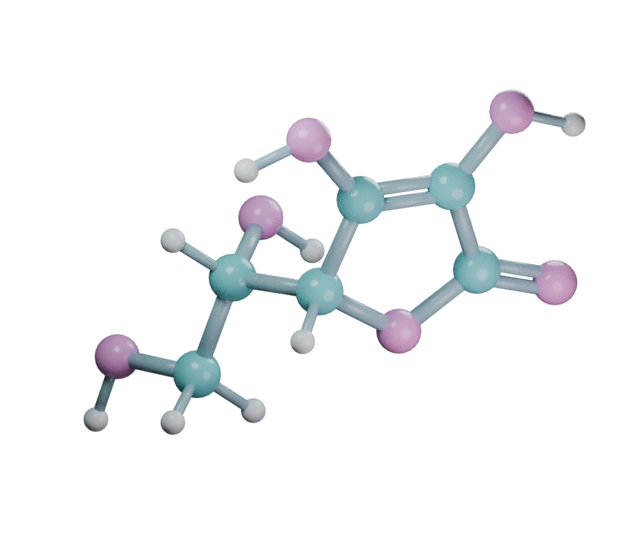

L’atelier moléculaire
Fais tourner une molécule, compare ses représentations et charge un conformère public ou ton propre fichier.
Manipuler une structureLaboratoire de recherche indépendant
Explorer la structure des molécules en 3D et comprendre comment elle peut orienter la recherche sur les ingrédients cosmétiques.

Ouvrir une structure, puis la replacer dans son contexte scientifique.
Fais tourner une molécule, compare ses représentations et charge un conformère public ou ton propre fichier.
Manipuler une structureDécouvre ce qu’une structure peut apporter à la recherche sur un ingrédient, de la molécule à la formulation.
Découvrir le domaineRecherche en cours
Notre premier cas porte sur la MMP‑1 humaine. Deux structures cristallographiques serviront à évaluer la capacité d’un moteur de docking à retrouver des poses connues.
Lire la méthode